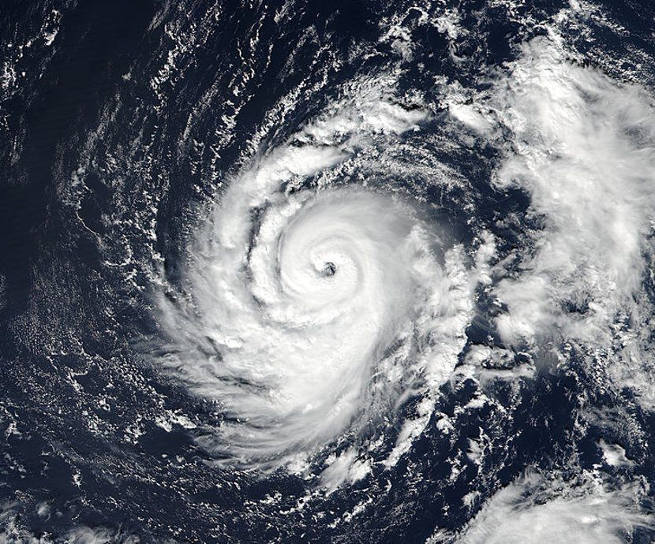

"Ja tu się nie będę zbytnio pierdolił, ogólnie będzie w pyte"
~Halalski myśliciel
Gdy byliśmy młodzi świat postrzegaliśmy instynktownie, a naszym jedynym sposobem postrzegania rzeczywistości było odbieranie bodźców wzrokowych, słuchowych, i tak dalej. Teraz zastanówmy się nad sposobem działania zmysłów, wszystko co postrzegamy to jest wypadkowy sygnał odebrany przez nasze receptory, a potem przetworzony przez nas mózg. No i tak naprawdę to możemy powiedzieć, że elektron albo proton się odbija od jakiegoś atomu i to wywołuje nam reakcję chemiczna lub jest sygnałem odbieranym lub przetwarzanym. Możemy, jak najbardziej ale, jak tak powiemy to mądrale się dowiedzą, że to my tak naprawdę hooja wiemy. Bo i tak żeby mieć rację to trzeba powiedzieć, żę to tam kwanty popierdalajom i som lub nie som, jebą lub nie. No dobra ale teraz jak wiemy żę one tak se latają i nie zderzają to i tak na siebie działają. I to się nazywa elektromagnetyzm. Cząstki na siebie działąją, poprzez próźnię, która na razie przyjmijmy, że jest pusta, co wcale nie jest takie oczywiste.
Ja się trochę znam, trochę nie, dlatego se kliknij to i obejrzyj Feynmana co sie zna i mówi mądrzej ode mnie.
Pewnie wiesz co to, ale ja za to ci powiem po co te pola i jakie mają właświwości. Tak naprawdę to jest najważniejszy paragraf z rozdziału 1, więc zacznijmy od razu to omawiać. Polem pewnej wartosci \( \Phi \) będziemy nazywać przestrzeń, lub jej częsć w której każdemu punktowi jest przyporządkowana wartość. No i super, a tera pacz, są różne rodzaje pól, musisz znać tylko 2 typy na tym poziomie wtajemniczenia. Do każdego pola podam od razu przykłady, bo nazwy same trudno się zapamiętuje.
stałe
jako przykład takiego pola to możemy podać na przykład pokój w którym panuje stała temperatura. \( \Phi \) to jest wartość temperatury w Kelwinach.
sferyczne
wyobraźmy sobie ze jesteśmy w kosmosie, wartość sily grawitacji zależy od odległości w jakiej znajdujemy się od ziemi. W tym przypadku wartość siły to \( \Phi \). Widzimy, że pole skalarne sferyczne ma tą samą wartość \( \Phi \) na dowolnej powierzchni sfery.
jednorodne
wyobraź se rzekę w której prędkosć nurtu jest taka sama na całej szerokości rzeki. Właśnie sobie wyobraźiłeś jednorodne pole wektorowe. Dodatkowo widzimy, że pole wekrowe mają kolejną właświwość - wartość \( \Phi \) zależy od kierunku. Dlatego właśnie nazywa się wektorowe.
centralne
No i widzisz teraz zobaczymy czy umiesz czytać. Wyobraźmy sobie ze jesteśmy w kosmosie, Siła grawitacji zależy od odległości w jakiej znajdujemy się od ziemi. W tym przypadku siła to \( \Phi \). Siła ma kierunek, wartość siły nie hehe. POwaa!
Tych nie trzeba znać chyba, że jesteś przemądrzały.
Jesteś już taki mądry, że ja to moge nawet nie mówić tylko pokazywać operatory różniczkowe to takie trójkąty i majo pojebane nazwy. \( \nabla \) taki na przykład to nabla, a taki \( \triangle \) to laplasjan. $$ \nabla = ( \frac{\partial}{\partial x} , \frac{\partial}{\partial y} , \frac{\partial}{\partial z}) $$ można to też zapisać tak: (to \( n_x \) itp. to wersory) $$ \nabla = \frac{\partial}{\partial x} n_x + \frac{\partial}{\partial y} n_y + \frac{\partial}{\partial z} n_z $$
Teraz, zobaczymy co nabla robi. Nablą możemy działać na pole skalarne i wektorowe. Służy ona do badania gradientu i dywergencji. I teraz jak sobie zadziałamy nablą na pole skalarne \( f(x,y,z) \), to znaczy przemnożymy skalarnie to otrzymamy gradient. Gradient wskazuje kierunek i wartość maksymalnego wzrostu przestrzennego funkcji. Gradient, jak można zauważyć to jest wektor. $$ grad f(x,y,z) = \nabla f(x,y,z) = ( \frac{\partial f(x,y,z)}{\partial x} , \frac{\partial f(x,y,z)}{\partial y} , \frac{\partial f(x,y,z)}{\partial z}) $$
Na załączonym obrazku jest mapa hipsometryczna Karpat, tam żył kiedyś sam Harnaś, polski Onan Barbarzyńca. Zdefiniujmy sobie pole f(x,y). No tu polem będzie rzut pionowy, a wielkością pola \( \Phi \) będzie wysokość. Jak sobie policzymy gradient, a potem podstawimy punkty \( (x_0,y_0), (x_1,y_1) \) to otrzymamy kierunek i wartość największego przewyższenia. (co prawda z wartościami ujemnymi, ale na razie ważne jest tylko przeczucie.)
No i wiesz, skąd to jest bo się znasz na matmie. W filmiku Granta Sandersona mówi on, o tym, że uczenie maszynowe można przedstawić jako wędrówkę wędrówkę najebanego gościa po płaszczyźnie. Jak będzie duży spad tzn. \( - \nabla \) to on spadnie po tym spadzie. No i niekoniecznie się wpierdoli w minimum globalne, ale na pewno w lokalną dziurę.
Powiedziałem, że działanie nablą na jakieś pole to jest mnożenie skalarne w przypadku, gdy mamy pole skalarne. Natomiast gdy pole będzie wektorowe, to będziemy musieli iloczyn skalarny dwóch wektor, bo teraz pole jest wektorem. Dostaniemy wtedy bardzo prosto dywergencję, a dywergencja, jak się domyślasz nie jest wektorem tylko skalarem. $$ div A(x,y,z) = \nabla * A(x,y,z) = ( \frac{\partial}{\partial x} , \frac{\partial}{\partial y} , \frac{\partial}{\partial z}) * (A_x, A_y, A_z)=$$ $$( \frac{\partial A_x}{\partial x} + \frac{\partial A_y}{\partial y} + \frac{\partial A_z}{\partial z}) $$ No ale teraz żadnych praktycznych przykładów nie będzie, a dlaczego, no dlatego, że to się przydaje tylko w zadaniach, a nie w praktyce.
Mieliśmy mnożenie skalara i wektora, skalarne wektora z wektorem, zostało mnożenie wektorowe dwóch wektorów. Rotacja pola wektorowego \( A \) to jest nic innego jak wyznacznik macierzy której pierwszy wiersz to wersory, drugi to \( \nabla \), a trzeci to jest wartorści pola. I to tak naprawdę tyle trzeba wiedzieć, bo reszty możemy się domyśleć. Jeśli rotacja pola będzie niezerowa to będzie znaczyło, że pole tworzy pewnego rodzaju wir. Przykładem pola o niezerowej rotacji może być pole z wektorowe prędkości podczas tornada.
$$ \nabla \times \vec{A}=\operatorname{rot}(\vec{A})=\left|\begin{array}{ccc} \hat{n}{x} & \hat{n}{y} & \hat{n}{z} \ \frac{\partial}{\partial x} & \frac{\partial}{\partial y} & \frac{\partial}{\partial z} \ A{x} & A{y} & A{z} \end{array}\right| $$
Tak naprawdę, zadania to też uczą a nie tylko wymagają i sprawdzają. A poza tym to najlepiej to popełniać własne błędy, nie cudze, dlatego warto samemu rozwiązywać zadania.